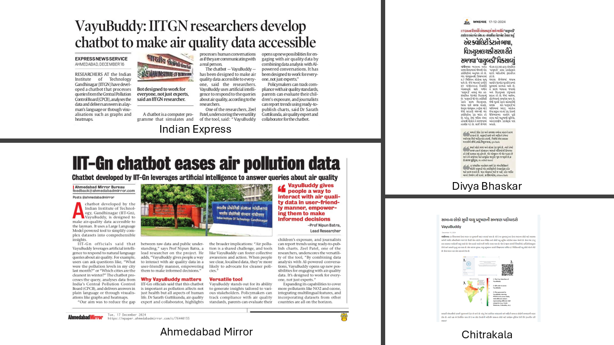
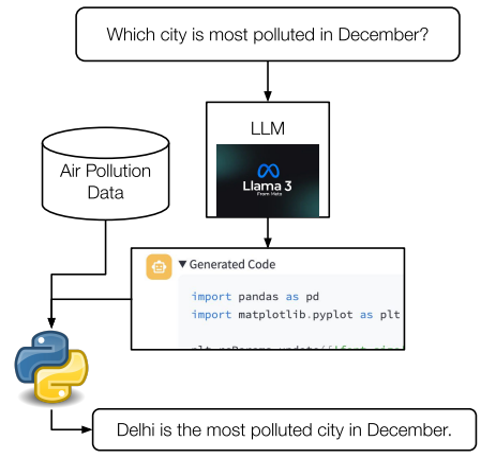
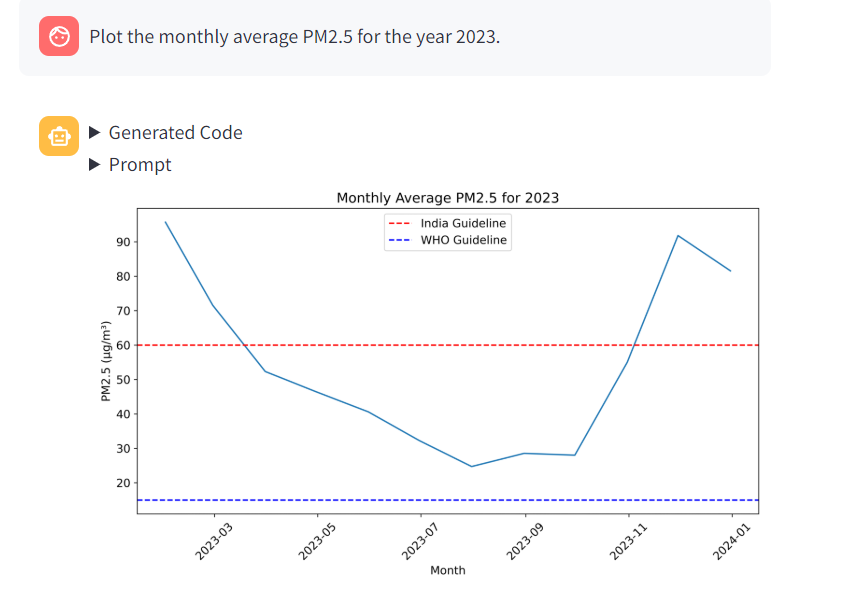
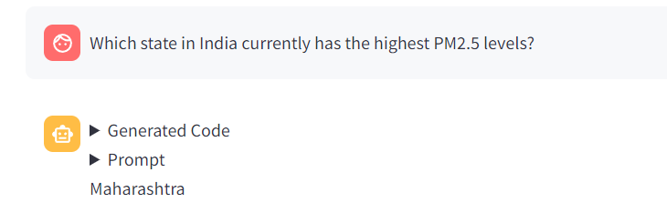
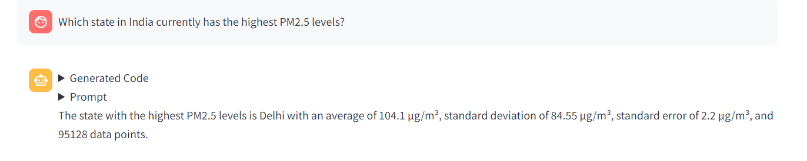
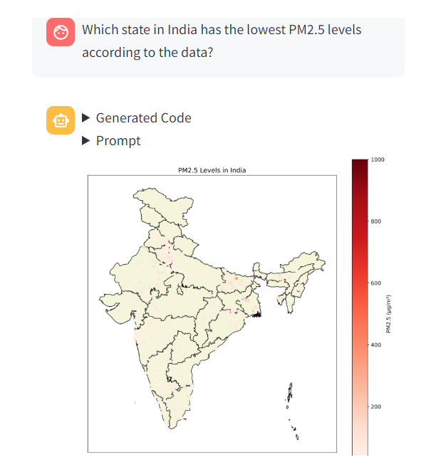

VayuBuddy: An LLM-Powered Chatbot to Democratize Air Quality Insights
Interact with chatbot directly: VayuBuddy
Abstract
Nearly 6.7 million lives are lost due to air pollution every year. While policymakers are working on the mitigation strategies, public awareness can help reduce the exposure to air pollution. Air pollution data from government-installed sensors is often publicly available in raw format, but there is a non-trivial barrier for various stakeholders in deriving meaningful insights from that data. In this work, we present VayuBuddy, a Large Language Model (LLM)-powered chatbot system to reduce the barrier between the stakeholders and air quality sensor data. VayuBuddy receives the questions in natural language, analyses the structured sensory data with a LLM-generated Python code and provides answers in natural language. We use the data from Indian government air quality sensors. We benchmark the capabilities of 7 LLMs on 45 diverse question-answer pairs prepared by us. Additionally, VayuBuddy can also generate visual analysis such as line-plots, map plot, bar charts and many others from the sensory data as we demonstrate in this work.
As a testament to its innovative design and real-world relevance, VayuBuddy has been featured in multiple newspaper articles. These articles provide insights into its applications, societal impact, and reception by users.

Media Coverage of VayuBuddy Chatbot
Dataset
Source:
Central Pollution Control Board (CPCB), India. ### Details: Covers 537 monitoring stations across 279 cities in 31 states. 7 years of PM2.5 data (2017–2023) resampled to daily averages.
Using the above theorem, probability statements about the sample mean can be approximated using a normal distribution. It’s the probability statements that are being approximated, not the random variable itself.
Flowchart of VayuBuddy System

Figure 2: Flowchart of the VayuBuddy Chatbot
Prompts Given to the LLM: System Prompts, Additional information and direction given to the LLM.
- The columns are ‘Timestamp’, ‘station’, ‘PM2 .5’, ‘PM10’, ‘address’, ‘city’, ‘latitude’, ’ longitude’,and ‘state’.
- Frequency of data is daily.
pollutiongenerally meansPM2.5.- Don’t print anything, but save result in a variable
answerand make it global. - Unless explicitly mentioned, don’t consider the result as a plot.
- PM2.5 guidelines: India: 60, WHO: 15.
- PM10 guidelines: India: 100, WHO: 50.
- If result is a plot, show the India and WHO guidelines in the plot.
- If result is a plot make it in tight layout, save it and save path in
answer. Example:answer='plot.png' - If result is a plot, rotate x-axis tick labels by 45 degrees.
- If result is not a plot, save it as a string in
answer. Example:answer='The city is Mumbai' - I have a geopandas.geodataframe india containining the coordinates required to plot Indian Map with states.
- If the query asks you to plot on India Map, use that geodataframe to plot and then add more points as per the requirements using the similar code as follows : v = ax.scatter(df[‘longitude’], df[‘latitude’]). If the colorbar is required , use the following code : plt.colorbar(v)
- If the query asks you to plot on India Map plot the India Map in Beige color
- Whenever you do any sort of aggregation, report the corresponding standard deviation, standard error and the number of data points for that aggregation.
- Whenever you’re reporting a floating point number, round it to 2 decimal places.
- Always report the unit of the data. Example: The average PM2.5 is 45.67 𝜇𝑔𝑚−3.
Impact of the VayuBuddy Chatbot
Health Impact: - PM2.5 pollutants are major contributors to life-threatening diseases, such as respiratory and cardiovascular conditions.
- Gaining insights into PM2.5 pollution levels is crucial for implementing effective mitigation strategies.
Accessibility: - Democratizes air quality data analysis. This makes the data accessible to non-experts which reduces dependency on technical knowledge or resources.
Empowers stakeholders like policymakers, researchers, and the public to make informed decisions.
The public can make healthier lifestyle choices, such as wearing masks or avoiding outdoor activities during high pollution periods.
Evaluation of the LLMs
Automated Evaluation Pipeline : - Built to make Evaluation faster and fair. - Ensures all possible correct answers are included.
How we measure Correctness: - 1 point : Correct Answer - 0 point : Incorrect Answer
When is it incorrect? : - LLM doesn’t generate the code - LLM generates code but gives an error while running. - LLM generates code runs but gives wrong answers.
You can see in the results that all the models are given points according to the 45 pre-prompted questions.
Results
Table 1: Overall Performance of LLMs on all evaluation queries.
| Model | # Params | Score (out of 45) |
|---|---|---|
| Llama3.1 | 70B | 39 |
| Llama3 | 70B | 38 |
| Codestral | 22B | 29 |
| Mixtral | 56B | 26 |
| Llama3.1 | 8B | 23 |
| Llama3 | 8B | 21 |
| Gemma | 9B | 19 |
| Codestral Mamba | 7B | 19 |
| Mistral | 7B | 8 |
| Gemma | 7B | 7 |
LLama3 models are performing the best among all models, with Codestral and Mixtral following LLama in performance.
Models with more parameters tend to perform better compared to those with fewer parameters.
Table 2: Performance of LLMs on different stakeholders.
| Model | Policymakers | AQ Researcher | Lung Patients | Parents | Public |
|---|---|---|---|---|---|
| Llama3-70b | 19 | 15 | 16 | 20 | 24 |
| Mixtral | 15 | 11 | 11 | 15 | 14 |
| Gemma-7b | 2 | 2 | 6 | 6 | 4 |
| Llama3.1-70b | 20 | 16 | 16 | 20 | 24 |
| Codestral Mamba | 8 | 7 | 8 | 9 | 13 |
| Codestral | 14 | 12 | 15 | 18 | 19 |
| Mistral 7B | 5 | 3 | 3 | 3 | 5 |
| Llama3-8b | 11 | 7 | 11 | 14 | 15 |
| Llama3.1-8b | 10 | 8 | 12 | 13 | 17 |
| Gemma-9b | 8 | 7 | 12 | 13 | 12 |
We observe that in almost all cases LLMs were able to generate either errorless or faulty Python codes. We rarely see a case where any code is not generated.
Llama3 provides a good balance between code generation and general knowledge. Code based LLMs failed at questions which required prior information about lockdown and festival seasons, while models Gemma and Mistral lack pretraining on codes
FINDINGS

Figure 3: Graph of the monthly average PM 2.5 for the year 2023
Gave some custom questions generated by ChatGPT to ask to the model.
“Which state in India currently has the highest PM2.5 levels?”
“Which state in India has the lowest PM2.5 levels according to the data?”
“What is the PM2.5 level in India’s most polluted city?”
“Which region in India shows the highest PM2.5 concentration throughout the year?”
“During which month does India experience the highest PM2.5 levels on average?”
“Which state in India has the most significant decrease in PM2.5 levels?”
“How do the PM2.5 levels in northern India compare to southern India?”
“Which city in India consistently shows the highest PM2.5 levels?”
“What is the PM2.5 level in India’s least polluted state?”
“In which month do PM2.5 levels peak in Indian cities?”
For Question “Which state in India currently has the highest PM2.5 levels?”
Out of 4 models in the given bot Llama3 and Gemini pro gave the answers.
The finding i found was it gave different answers for the same question. Llama3 gave the answer as “Delhi” and Gemini pro gave the answer as “Maharashtra”.

Figure 4: Gemini pro answer

Figure 5: Llama3 answer
Great thing about the VayuBuddy is that it can give the map plot also for the given question.

Figure 6: Showing Map plots for the following question
Some of the observations we found was that the model was able to generate the code for the given question and also gave the answer for the same.
For the above questions which we generated from ChatGPT only two models were able to answer those question which were Llama3 and Gemini pro.
The answers given by the models were different for the same question which shows that the model is not able to give the correct answer for the same question.
Llama3 model was able to answer all questions correctly which were generated by ChatGPT.
We observed that only Llama3 model was able to generate the graphs and map plots for the asking question related to that.
Limitations and Future Work
It is limited to Indian air quality data. We can extend beyond and include data from other countries.
It lacks fine-tuning on domain-specific tasks.
It faces difficulty handling multi-station queries.We can use advanced methods to effectively process and respond.
This system only specifically focuses on one pollutant, PM2.5. We can include more pollutants like SO2, NO2, CO, and O3 for comprehensive air monitoring.
It relies on zero-shot prompting only and hasn’t been evaluated with other prompting methods like chain of thought, tree of thought, and react prompting.
The Library installation process is not automated and requires manual setup.